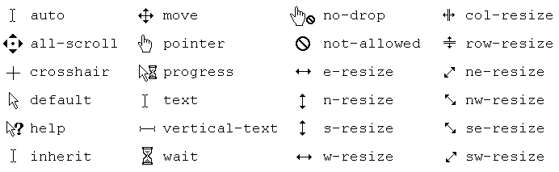

CSS
CSS
CSS(Cascading Style Sheets)는 HTML을 꾸며주는 디자인 언어 스타일시트입니다.
CSS 선택자
선택자를 통하여 요소를 선택하고 속성을 줄 수 있습니다.
| 태그 | 유형 | 설명 | 버전 |
|---|---|---|---|
| . | .class {color:#fff;} | 클래스 선택자 | CSS1 |
| # | .id {color:#fff;} | 아이디 선택자 | CSS1 |
| * | * {color:#fff;} | 전체 선택자 | CSS2 |
| element | p {color:#fff;} | 요소 선택자 | CSS1 |
| element, element | p, div {color:#fff;} | 그룹 선택자 | CSS1 |
| element element | div p {color:#fff;} | 후손 선택자 | CSS1 |
| element > element | div > p {color:#fff;} | 이웃 선택자 | CSS2 |
| element + element | div > p {color:#fff;} | 자식 선택자 | CSS2 |
| element ~ element | div ~ p {color:#fff;} | 형제 선택자 | CSS3 |
| [attribute] | p [class] {color:#fff;} | 속성 선택자 | CSS2 |
| [attribute=value] | p [class="white"] {color:#fff;} | 속성 선택자 | CSS2 |
| [attribute~=value] | p [class~="white"] {color:#fff;} | 속성 선택자 | CSS2 |
| [attribute^=value] | p [attr^="w"] {color:#fff;} | 속성 선택자 | CSS3 |
| [attribute*=value] | p [attr*="white"] {color:#fff;} | 속성 선택자 | CSS3 |
| [attribute$=value] | p [attr$="w"] {color:#fff;} | 속성 선택자 | CSS3 |
| :link | a:link {color:#fff;} | 방문하지 않은 링크 | CSS1 |
| :visited | a:visited {color:#fff;} | 방문한 링크 | CSS1 |
| :hover | a:hover {color:#fff;} | 마우스 오버 링크 | CSS1 |
| :active | a:active {color:#fff;} | 활성화된 링크 | CSS1 |
| :focus | a:focus {color:#fff;} | 포커스된 링크 | CSS2 |
| :root | a:root {color:#fff;} | 문서의 루트 요소 | CSS3 |
| :nth-child(n) | p:nth-child(3) {color:#fff;} | n번째 스타일 적용 | CSS3 |
| :nth-last-child(n) | p:nth-last-child(n) {color:#fff;} | 끝에서 n번째 스타일 적용 | CSS3 |
| :nth-of-type(n) | p:nth-of-type(n) {color:#fff;} | n번째 스타일 적용 | CSS3 |
| :nth-last-of-type(n) | p:nth-last-of-type(n) {color:#fff;} | 끝에서 n번째 스타일 적용 | CSS3 |
| ::first-letter | p::first-letter {color:#fff;} | 첫 번째 문장 | CSS1 |
| ::first-line | p::first-line {color:#fff;} | 첫 번째 줄 | CSS1 |
| :first-of-type | p:first-of-type {color:#fff;} | 첫 번째 요소의 선택자 | CSS3 |
| :last-of-type | p:last-of-type {color:#fff;} | 마지막 번째 요소의 선택자 | CSS3 |
| :only-of-type | p:only-of-type {color:#fff;} | 해당 요소가 유일한 요소의 선택자 | CSS3 |
| :first-child | p:first-child {color:#fff;} | 첫 번째 자식요소 | CSS3 |
| :last-child | p:last-child {color:#fff;} | 마지막 자식요소 | CSS3 |
| :only-child | p:only-child {color:#fff;} | 자식요소가 유일하게 하나일 때 | CSS3 |
| :only-of-child | p:only-of-child {color:#fff;} | 해당 요소가 유일한 요소 일 때 | CSS3 |
| :target | :target {color:#fff;} | 연결 | CSS3 |
| :enabled | input[type="text"]:enabled {color:#fff;} | 사용할 수 있는 상태 | CSS3 |
| :disabled | input[type="text"]:disabled {color:#fff;} | 사용할 수 없는 상태 | CSS3 |
| :checked | input:checked {color:#fff;} | 체크된 상태 | CSS3 |
| :in-range | input:in-range {color:#fff;} | 인풋 요소의 라인을 설정합니다. | CSS3 |
| :out-of-range | input:out-of-range {color:#fff;} | 인풋 요소의 아웃라인을 설정합니다. | CSS3 |
| :valid | input:valid {color:#fff;} | 인풋 요소가 유효할 때 설정됩니다. | CSS3 |
| :invalid | input:invalid {color:#fff;} | 인풋 요소가 유효하지 않을 때 설정됩니다. | CSS3 |
| :optional | input:optional {color:#fff;} | 인풋 요소의 옵션에 설정됩니다. | CSS3 |
| :read-only | input:read-only {color:#fff;} | 인풋 요소를 읽었을 때 설정됩니다. | CSS3 |
| :read-write | input:read-write {color:#fff;} | 인풋 요소를 쓸 때 설정됩니다. | CSS3 |
| :input:required | input:required {color:#fff;} | 인풋 요소가 필수 일 때 설정됩니다. | CSS3 |
| :lang(language) | p:lang(it) {color:#fff;} | 언어설정에 따라 설정됩니다. | CSS2 |
| :empty | p:empty {color:#fff;} | 빈 상태 | CSS3 |
| ::before | p::before {content: "content";} | 요소 앞에 내용 추가 | CSS3 |
| ::after | p::after {content: "content";} | 요소 뒤에 내용 추가 | CSS3 |
| ::selection | ::selection {color:#fff;} | 마우스로 선택했을 때 | CSS3 |
| :not(seletor) | :not(p) {color:#fff;} | 제외한 | CSS3 |
- id 선택자
- 하나의 태그만 식별하기 위한 선택자입니다.
- 하나의 태그에 하나만 사용할 수 있습니다.
- "#"으로 표시합니다.
- class 선택자
- 여러개의 태그를 식별하기 위한 선택자입니다.
- 하나의 태그에 여러개를 사용할 수 있습니다.
- "."으로 표시합니다.
float으로 인한 영역 깨짐 방지법
float을 사용하면 heigt 값을 0으로 인식합니다.
- 깨지는 영역에 똑같이 float을 사용합니다. (X) 모든 영역에 float을 사용하게 되고 정확히 깨지는 영역을 알 수 없습니다.
- float의 성질을 차단하는 clear:both를 사용합니다. (X) 깨지는 영역을 정확히 확인 할 수 없습니다.
- float을 사용한 부모 박스한테 overflow: hidden을 사용합니다. (O)
- clearfix속성을 만들어서 사용합니다. (O)
컬러를 표현하는 방법

| 색상명 | color-name; |
| HEX값(#RRGGBB형식의 16진수 색상값) | #000000; |
| RGB값(각 변수에 0~255 사이의 정수 또는 백분율값) | rgb(0,0,0); |
| RGBA값(RGB값에 alpha채널(투명도)이 더해진 값) | rgba(0,0,0,0); |
| HSL값(색상(0~360%), 채도(0~100%), 명도(0~100%)) | color-name; |
| HSLA값(HSL값에 alpha채널(투명도)이 더해진 값) | hsla(0%,0%,0%,0); |
| Opacity(색상에 대한 투명도로 0.0~1.0사이 값) | opacith: 0; |
단위를 표현하는 방법
- 절대단위 (in, cm, mm, pt, pc) : 정확한 기준에 의해 고정된 단위, 출력 매체에 쓰기 적절
- 상대단위 (px, em, ex, %, rem, vw, vh, vmin, vmax) : 어떤 기준을 통해 상대적으로 변할 수 있는 단위로, 다양한 매체에 쓰기 적절
- px : 모니터의 1dot이 1pixel을 의미하며, pixel은 해상도에 따라서 상대적인 크기를 갖습니다.
- em : 부모 요소의 대문자 너비를 기준으로 상대적인 값을 갖습니다.
- ex : 부모 요소의 소문자 너비를 기준으로 상대적인 값을 갖습니다.
- % : 부모 요소의 길이를 기준으로 상대적인 값(%)을 갖습니다.
- rem : 루트(root em) 요소의 크기를 기준으로 상대적인 값을 갖습니다.
- vw : 뷰포트(viewport) 브라우저 가로 크기를 기준으로 상대적인 값을 갖습니다.
- vh : 뷰포트(viewport) 브라우저 세로 크기를 기준으로 상대적인 값을 갖습니다.
- vmin : 뷰포트(viewport) 브라우저 가로 크기 또는 세로 크기 중 작은 값을 기준으로 상대적인 값을 갖습니다.
- vmax : 뷰포트(viewport) 브라우저 가로 크기 또는 세로 크기 중 큰 값을 기준으로 상대적인 값을 갖습니다.
- in : in은 인치를 의미합니다.
- cm : cm은 센치미터를 의미합니다.
- mm : mm는 밀리미터를 의미합니다.
- pt : pt는 포인트를 의미합니다.
- pc : .pc는 파이카를 의미합니다.
CSS를 사용하는 방법
<div= style="padding: 10px; border: 1px solid #000;"> ><head>
<style type="text/css"> </style>
</head>><link rel="stylesheet" href="CSS 경로/>>절대경로 / 상대경로
- 절대경로 : 모든 디렉토리가 포함된 모든 경로의 주소
ex) img src="http://www.homejjang.com/images/tree00.gif"
- 상대경로 : 이미지를 삽입할 HTML 문서를 기준으로 경로를 표현하는 주소
ex) img scr="../images/logo.gif"
- 상대경로 표현
- ../ : 1단계 상위폴더
- ../../ : 2단계 상위폴더
- ./ : 파일의 현재 위치
- / : 최상위 루트 폴더

컨텐츠 요소를 안보이게 하는 방법
- display: none; -- display: block; (영역X)(애니X)
- opacity: 0; -- opacity: 1; (영역 유지)(애니O)
- visibility: hidden; -- visibility: visible; (영역 유지)(애니X)
- IR 기법: width: 0; height: 0;
텍스트를 한 줄로 나타내는 방법(IR효과)
- 의미있는 이미지의 대체 텍스트를 제공하는 경우(Phark Method)
.ir_pm {display: block; overflow: hidden; font-size: 0; line-height: 0; text-indent: -9999px;} - 의미있는 이미지의 대체 텍스트로 이미지가 없어도 대체 텍스트를 보여주고자 하는 경우(WA IR)
.ir_wa {display: block; overflow: hidden; position: relative; z-index: -1; width: 100%; height: 100%;} - screen out 대체 텍스트가 아닌 접근성을 위한 숨김 텍스트를 제공할 경우(Screen Out)
.ir_so {overflow: hidden; position: absolute; width: 0; height: 0; line-height: 0; text-indent: -9999px;}
미디어쿼리(Mediaquery)
미디어쿼리는 화면 크기에 따른 각각의 속성 값을 지정하여, 여러가지 화면을 구성하는 기술입니다.
@media [only/not] [media type] [and/,](조건문){실행문}
- media : 미디어쿼리 시작을 의미합니다.
- [only/not] : only는 미디어쿼리를 지원하는 브라우저에서만 해석하고 not은 반대를 의미합나디. 미디어쿼리 구문을 해석하라는 명령어입니다.(생략가능)
- [media type] : 미디어쿼리를 해석해야 할 대상을 나타냅니다.(생략가능)
- all : 모든 미디어 유형
- screen : 컴퓨터 화면
- print : 인쇄 장치
- handheld : 휴대용 장치
- tv : 텔레비젼
- aural : 음성출력기
- barille : 점자 출력기
- projection : 프로젝트
- tty : 고정폭을 가지는 텔레타이프
- [and/,] : and는 둘 다 조건에 맞아야 하고, ','는 하나만 맞아도 실행합니다. 앞과 뒤에 조건을 나타냅니다.(생략가능)
- 조건문 : 해당 조건을 설정합니다.
- 실행문 : 조건에 따른 실행을 설정합니다.
벤더 프리픽스(Vender Prefix)
주요 웹 브라우저 공급자가 새로운 실험적인 기능을 제공할 때 이전 버전의 웹 브라우저에 그 사실을 알려주기 위해
사용하는 접두사(prefix)를 의미합니다.
즉, 아직 CSS 권고안에 포함되지 못한 기능이나, CSS 권고안에는 포함되어 있지만 아직 완벽하게 제정되지 않은 기능을 사용하고자 할 때 사용합니다.
<style>
.button {
background: red;
background: -webkit-linear-gradient(red, yellow);
background: -moz-linear-gradient(red, yellow);
background: -ms-linear-gradient(red, yellow);
background: -o-linear-gradient(red, yellow);
background: linear-gradient(red, yellow);
}
</style>해상도에 따른 이미지 처리하는 방법
- <img>태그를 이용하는 방법
: srcset과 sizes 속성을 추가하여 반응형 이미지 처리
- srcset : srcset을 지원하는 브라우저는 이 값을 읽어 현재의 화면 상태에 맞는 적절한 이미지를 불러옵니다.
- sizes: 미디어쿼리의 중단점(breakpoint)별로 필요한 이미지의 정보를 추가로 제공함으로써 브라우저로 하여금 현재의 상태에 맞는 이미지를 불러옵니다.
<img src="assets/img/blog_img01_1x.jpg"
srcset="assets/img/blog_img01_1x.jpg 1x,
assets/img/blog_img01_2x.jpg 2x,
assets/img/blog_img01_3x.jpg 3x,
assets/img/blog_img01_4x.jpg 4x" alt="블로그 이미지">: css에 미디어쿼리를 추가하여 해상도에 따라 각 해상도에 맞는 사이즈의 이미지를 보여주도록 설정합니다.
.img {background: url(img_1x.jpg);}
<!-- 픽셀 비율이 1x일 경우 img_1x.jpg를 보여줌-->
@media
only screen and (-webkit-min-device-pixel-ratio: 1.5),
only screen and (min-device-pixel-ratio: 1.5),
only screen and (min-resolution: 1.5dppx){
.blog2 .img_retina {background: url(img_2x.jpg);}
}
<!-- 픽셀 비율이 2x일 경우 img_2x.jpg를 보여줌-->
@media
only screen and (-webkit-min-device-pixel-ratio: 2.5),
only screen and (min-device-pixel-ratio: 2.5),
only screen and (min-resolution: 2.5dppx){
.blog2 .img_retina {background: url(img_3x.jpg);}
}
<!-- 픽셀 비율이 3x일 경우 img_3x.jpg를 보여줌-->
@media
only screen and (-webkit-min-device-pixel-ratio: 3.5),
only screen and (min-device-pixel-ratio: 3.5),
only screen and (min-resolution: 3.5dppx){
.blog2 .img_retina {background: url(img_4x.jpg);}
}
<!-- 픽셀 비율이 4x일 경우 img_4x.jpg를 보여줌-->CSS Reference
B
background
백그라운드 속성 값을 설정합니다.
background-image
백그라운드 이미지를 설정합니다.
- background-image: none; - 백그라운드 이미지 속성을 설정하지 않습니다.
- background-image: url(이미지 경로); - 백그라운드 이미지를 설정합니다.
background-attachment
백그라운드 이미지 고정 여부를 설정합니다.
- background-attachment: scroll;(기본값)
- background-attachment: fixed; - 배경이미지를 고정하고 컨텐츠만 움직입니다.
- background-attachment: local; - 배경이미지와 컨텐츠가 같이 움직입니다.
background-position
백그라운드 위치를 설정합니다.
- background-position: left top;
- background-position: left center;/li>
- background-position: left bottom;
- background-position: right top;
- background-position: right center;
- background-position: right bottom;
- background-position: center top;
- background-position: center center;
- background-position: center bottom;
- background-position: 10px 20px;
- background-position: 10% 20%;
- background-position: 10% 20%, 10px 20px, center top;
background-repeat
백그라운드 이미지의 반복 여부를 설정합니다.
- background-repeat: repeat;(기본값) - 이미지를 x축, y축으로 반복 설정합니다.
- background-repeat: repeat-x; -이미지를 x축으로 반복 설정합니다.
- background-repeat: repeat-y; -이미지를 y축으로 반복 설정합니다.
- background-repeat: no-repeat; - 이미지를 반복하지 않고 하나만 나오게 합니다.
background-size
백그라우드 이미지 사이즈를 설정합니다.
- background-size: length
- background-size: auto(기본값)
- background-size: contain - 이미지를 요소의 크기에 맞게 설정합니다. 가로와 세로의 비율을 유지하기 때문에 공백이 생길 수 있습니다.
- background-size: cover - 이미지를 요소의 크기에 맞게 설정합니다. 공백 없이 화면 크기에 맞추기 때문에 이미지가 왜곡될 수 있습니다.
background-blend-mode
백그라운드 이미지의 블랜드 모드를 설정합니다.
background-color
백그라운드 색을 설정합니다.
- background-color: transparent; -백그라운드 색을 투명하게 설정합니다.
- background-color: color; - 백그라운드의 컬러값을 설정합니다.
border
요소의 테두리를 설정합니다.
border-color
테두리의 색상을 설정합니다.
- border-color: transparent; -테두리의 색을 투명하게 설정합니다.
- border-color: color; - 테두리의 컬러값을 설정합니다.
border-style
테두리의 스타일을 설정합니다.
- border-style: dotted;
- border-style: dashed;
- border-style: solid;
- border-style: double;
- border-style: groove;
- border-style: ridge;
- border-style: inset;
- border-style: outset;
- border-style: none;
- border-style: hidden;
- border-style: wave;
border-width
테두리의 두께을 설정합니다.
border-top
위쪽 테두리의 속성값을 설정합니다.
- border-top-color; - 위쪽 테두리의 색상을 설정합니다.
- border-top-width; - 위쪽 테두리의 두꼐을 설정합니다.
- border-top-style; - 위쪽 테두리의 스타일을 설정합니다.
border-right
오른쪽 테두리의 속성값을 설정합니다.
- border-right-color; - 오른쪽 테두리의 색상을 설정합니다.
- border-right-width; - 오른쪽 테두리의 두꼐을 설정합니다.
- border-right-style; - 오른쪽 테두리의 스타일을 설정합니다.
border-bottom
아래쪽 테두리의 속성값을 설정합니다.
- border-bottom-color; - 아래쪽 테두리의 색상을 설정합니다.
- border-bottom-width; - 아래쪽 테두리의 두꼐을 설정합니다.
- border-bottom-style; - 아래쪽 테두리의 스타일을 설정합니다.
border-left
왼쪽 테두리의 속성값을 설정합니다.
- border-left-color; - 왼쪽 테두리의 색상을 설정합니다.
- border-left-width; - 왼쪽 테두리의 두꼐을 설정합니다.
- border-left-style; - 왼쪽 테두리의 스타일을 설정합니다.
border-image
테두리에 이미지를 삽입해줍니다.
border-image-outset
이미지와 요소 외곽의 거리를 설정합니다. (4개 지정 가능)
border-image-repeat
이미지의 반복 방법을 설정합니다. (2개 지정 가능)
border-image-slice
이미지를 구역별로 나눌 때 사용할 슬라이스 크기를 설정합니다. (4개 지정 가능)
border-image-source
원본 이미지를 삽입합니다.
border-image-width
이미지의 너비를 설정합니다. (4개 지정 가능)
border-radius
테두리의 모서리를 둥글게 설정합니다.
border-top-left-radius
왼쪽 위 테두리의 모서리를 둥글게 설정합니다.
border-top-right-radius
오른쪽 위 테두리의 모서리를 둥글게 설정합니다.
border-bottom-left-radius
왼쪽 아래 테두리의 모서리를 둥글게 설정합니다.
border-bottom-right-radius
오른쪽 아래 테두리의 모서리를 둥글게 설정합니다.
C
clear
float 요소의 성질을 차단합니다.
- clear: none; - clear를 적용하지 않습니다.
- clear: left; - 왼쪽 요소에 성질을 차단합니다.
- clear: right; - 오른쪽 요소에 성질을 차단합니다.
- clear: both; - 양쪽 요소에 성질을 차단합니다.
color
텍스트의 색상을 설정합니다.
- color: color; - 텍스트의 컬러값을 설정합니다.
cursor
요소를 가리킬 때 표시 할 마우스 커서를 지정합니다.
- auto; - 사용자 에이전트가 현재 맥락에 맞춰 표시할 커서를 결정. 예를 들어 글씨 위에서는 text를 사용
- default; - 플랫폼에 따라 다른 기본 커서. 보통 화살표
- none; - 커서 없음
- context-menu; - 콘텍스트 메뉴 사용 가능
- help; - 도움말 사용 가능
- pointer; - 링크를 나타내는 포인터. 보통 한 쪽을 가리키는 손
- progress; - 프로그램이 백그라운드에서 작업 중이지만, 사용자가 인터페이스와 상호작용할 수 있음. (wait과 반대)
- wait; - 프로그램이 작업 중이고, 사용자가 인터페이스와 상호작용할 수 없음. (progress와 반대) 간혹 모래시계나 시계모양 그림 사용
- cell; - 표의 칸이나 여러 칸을 선택할 수 있음
- crosshair; - 십자 커서. 종종 비트맵 선택에 사용
- text; - 글씨 선택 가능. 보통 I빔 모양
- vertical-text; - 세로쓰기 글씨 선택 가능. 보통 옆으로 누운 I빔 모양
- alias; - 별칭이나 바로가기를 만드는 중
- copy; - 복사하는 중
- move; - 움직이는 중
- no-drop; - 현재 위치에 놓을 수 없음
- not-allowed; - 요청한 행동을 수행할 수 없음
- grab; - 잡을 수 있음. (잡아서 이동)
- grabbing; - 잡고 있음. (잡아서 이동)
- all-scroll; - 모든 방향으로 이동 가능(패닝)
- col-resize; - 항목/행의 크기를 좌우로 조절할 수 있음. 종종 좌우 화살표의 가운데를 세로로 분리한 모양을 사용
- row-resize; - 항목/열의 크기를 상하로 조절할 수 있음. 종종 상하 화살표의 가운데를 가로로 분리한 모양을 사용
- n-resize; - 상자 가장자리를 위로 이동
- e-resize; - 상자의 가장자리를 오른쪽으로 이동
- s-resize; - 상자의 가장자리를 아래로 이동
- w-resize; - 상자의 가장자리를 왼쪽으로 이동
- ne-resize; - 상자 가장자리를 북동쪽으로 이동
- nw-resize; - 상자 가장자리를 북서쪽으로 이동
- se-resize; - 상자의 가장자리를 남동쪽으로 이동
- sw-resize; - 상자의 가장자리를 남서쪽으로 이동
- ew-resize; - 양방향(좌우) 크기 조정 커서
- ns-resize; - 양방향(위아래) 크기 조정 커서
- nesw-resize; - 양방향(북동) 크기 조정 커서
- nwse-resize; - 양방향(북서) 크기 조정 커서
- zoom-in; - 확대할 수 있음
- zoom-out; - 축소할 수 있음

D
display
요소의 표시 유형을 설정합니다
- display: none; - 요소를 보이지 않게 합니다.(영역X)
- display: inline; - 요소를 인라인 요소처럼 표시합니다.
- display: block; - 요소를 블럭 요소처럼 표시합니다.
- display: inline-block; - 요소를 인라인 수준 블록 컨테이너로 표시합니다.
- display: contents;
- display: flex;
- display: grid;
- display: inline-flex;
- display: inline-grid;
- display: inline-table;
- display: list-item;
- display: run-in;
- display: table;
- display: table-caption;
- display: table-header-group;
- display: table-footer-group;
- display: table-row-group;
- display: table-cell;
- display: table-column;
- display: table-row;
F
float
블록 요소의 정렬 상태를 설정합니다.
- float: none; - float의 성질을 적용하지 않습니다. (기본값)
- float: left; - 블록요소를 왼쪽으로 정렬합니다.
- float: right; - 블록요소를 오른쪽으로 정렬합니다.
font-size
텍스트의 크기를 설정합니다.
- font-size: length; (O) - px, em, rem 등으로 크기를 설정합니다.
- font-size: medium; (X) - 브라우저에서 정한 기본 텍스트 크기입니다.
- font-size: xx-small, x-small, small, large, x-large, xx-large; (X) - medium에 대한 상대적인 크기입니다.
- font-size: smaller, larger; (X) - 부모 요소의 글자 크기에 대한 상대적인 크기입니다.
- font-size: percentage; (X) - %값으로 크기를 설정합니다.
H
height
요소의 세로 값을 설정합니다.
- height: auto; - 기본값.
- height: length;
L
line-height
문장과 문장 사이의 간격을 설정합니다.
- line-height: normal; - 기본값. (보통 1.2)
- line-height: number; - 텍스트 크기의 배수로 간격을 설정합니다.
- line-height: length;
- line-height: percentage;
M
margin
박스 요소의 바깥쪽 여백을 설정합니다.
- margin-top: 10px; =요소의 위쪽 바깥쪽 여백을 설정합니다.
- margin-right: 11px; =요소의 오른쪽 바깥쪽 여백을 설정합니다.
- margin-bottom: 12px; =요소의 아래쪽 바깥쪽 여백을 설정합니다.
- margin-left: 13px; =요소의 왼쪽 바깥쪽 여백을 설정합니다.
- margin : 10px 11px 12px 13px; =위쪽(10px)/오른쪽(11px)/아래쪽(12px)/왼쪽(13px)
- margin : 10px 11px 12px; =위쪽(10px)/왼쪽,오른쪽(11px)/아래쪽(12px)
- margin : 10px 11px; =위쪽,아래쪽(10px)/왼쪽,오른쪽(11px)
- margin : 10px; = 위쪽,오른쪽,아래쪽,왼쪽(10px)
- margin: auto; = 자동값, 기본값
- margin: 0 outo; = 블록 요소를 가운데 정렬할 때 사용합니다. (위쪽,아래쪽(0px)/왼쪽,오른쪽(auto))
O
overflow
내용이 요소 상자보다 커졌을 때 어떻게 해야 하는지를 지정한다.
- overflow: auto; - 내용이 잘릴 때만 스크롤바를 추합니다.
- overflow: scroll; - 항상 스크롤 바를 추가합니다.
- overflow: hidden; - 박스를 넘어간 내용은 보여주지 않습니다.
- overflow: visible; - 박스를 넘어가도 내용을 보여줍니다.
opacity
요소의 불투명도를 설정합니다.
- opacity: number; - 0에서 1 사이 값을 설정합니다.
P
padding
박스 요소의 안쪽 여백을 설정합니다.
- padding-top: 10px; =요소의 위쪽 안쪽 여백을 설정합니다.
- padding-right: 11px; =요소의 오른쪽 안쪽 여백을 설정합니다.
- padding-bottom: 12px; =요소의 아래쪽 안쪽 여백을 설정합니다.
- padding-left: 13px; =요소의 왼쪽 안쪽 여백을 설정합니다.
- padding : 10px 11px 12px 13px; =위쪽(10px)/오른쪽(11px)/아래쪽(12px)/왼쪽(13px)
- padding : 10px 11px 12px; =위쪽(10px)/왼쪽,오른쪽(11px)/아래쪽(12px)
- padding : 10px 11px; =위쪽,아래쪽(10px)/왼쪽,오른쪽(11px)
- padding : 10px; = 위쪽,오른쪽,아래쪽,왼쪽(10px)
T
text-align
텍스트 정렬 방식을 설정합니다.
- text-align: left(기본) - 텍스트를 왼쪽 정렬합니다.
- text-align: center; - 텍스트를 가운데 정렬합니다.
- text-align: right; - 텍스트를 오른쪽 정렬합니다.
- text-align: justify; - 텍스트를 양족 정렬합니다.
text-decoration
텍스트의 밑줄, 중간줄, 윗줄을 긋습니다.
- text-decoration: none; - 선을 만들지 않습니다.
- text-decoration: underline; - 글자 아래에 선을 만듭니다.
- text-decoration: overline; - 위에 선을 만듭니다.
- text-decoration: line-through; - 글자 중간에 선을 만듭니다.
text-indent
텍스트 블록에서 첫 번째 줄의 들여 쓰기를 지정합니다.
- text-indent: length; - 들여쓰는 너비의 단위를 지정합니다.
- text-indent: %; - 들여쓰는 너비의 %값을 지정합니다.
- text-indent: initial; - 기본값
text-transform
영문 텍스트를 대문자 또는 소문자로 설정합니다.
- text-transform: none; - 속성을 적용하지 않습니다.
- text-transform: capitalize; - 각 단어의 첫 글자만 대문자로 변경합니다.
- text-transform: uppercase; - 텍스트를 모두 대문자로 변경합니다.
- text-transform: lowercase; - 텍스트를 모두 소문자로 변경합니다.
text-overflow
표시되지 않는 오버플로 된 콘텐츠를 보여주는 방법을 지정합니다. 잘라내거나 줄임표 (...)를 표시하거나 사용자 정의 문자열을 표시 할 수 있습니다
- text-overflow: clip; - 기본값. 텍스트를 자릅니다.
- text-overflow: ellipsis; - 텍스트를 생략 부호(...)로 표시합니다.
- text-overflow: string; - 잘린 텍스트를 지정한 문자열로 표시합니다.
V
visibility
요소의 가시성을 설정합니다.
- visibility: visible; - 기본값. 박스가 보여집니다.
- visibility: hidden; - 요소를 숨기지만 영역(공간)은 남아있습니다.
- visibility: collapse; - 테이블 행, 행 그룹, 열, 열 그룹 요소를 숨기고 공간도 제거합니다. (그 외 요소의 지정하면 hidden으로 해석)
W
white-space
요소 안의 공백을 설정합니다.
- white-space: normal; - 연속된 공백을 하나로 병합합니다.
- white-space: nowrap;
- white-space: pre;
- white-space: pre-wrap;
- white-space: pre-line;
width
요소의 가로값을 지정합니다.
- width: auto; - 기본값.
- width: length;